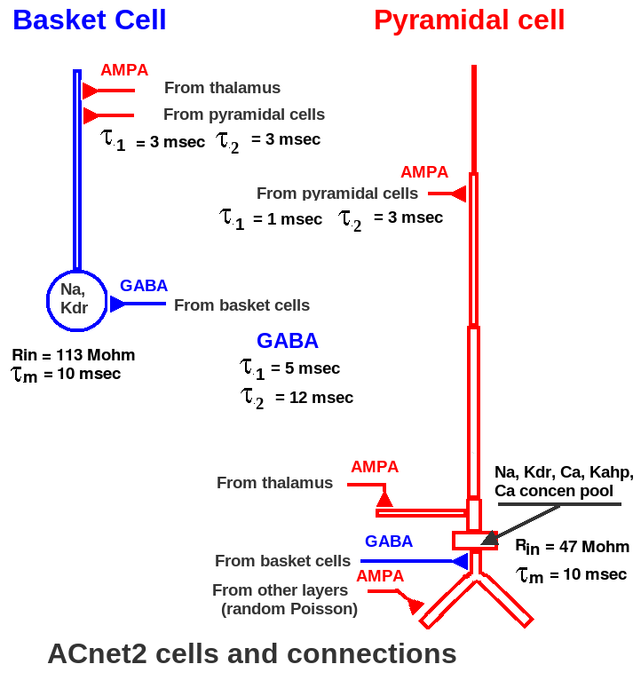
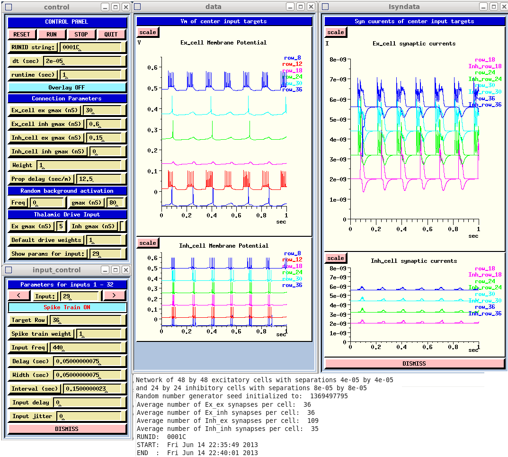
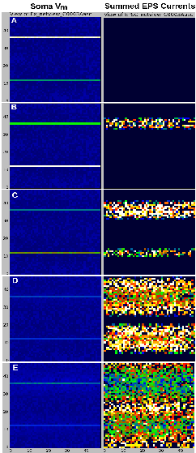

I encourage you to extend and share this tutorial/documentation and simulation script package with others. The files here may be freely distributed under the terms of the GNU Lesser General Public License version 2.1.
David Beeman University of Colorado, Boulder dbeeman@colorado.edu Tue Sep 3 12:03:30 MDT 2013
Cortical waves have been observed in many cortical areas, including the primary auditory cortex (AI). For example, see Kral et al. (2009). The ACnet2 model was developed both as a study of the propagation of cortical waves, and as a tutorial example for the construction of cortical networks. The simulation scripts are designed to be run with GENESIS 2.3 and are extensively commented, are easily customizable and are designed for extension to more detailed models, or conversion to other simulation systems. The model is slowly being implemented in GENESIS 3 (G-3) (Cornelis et al, 2012) and a conversion to neuroConstruct (http://www.neuroconstruct.org/) is planned. The scripts will be of particular interest to those GENESIS network modelers who have not taken advantage of the ten-fold speed increase available with the use of 'hsolve' for network simulations.
This package also contains both GENESIS and simulator-independent Python tools for the visualization and analysis of network activity.
More information about GENESIS can be obtained from http:genesis-sim.org and Beeman and Bower (1998).
The scientific purpose and simulation results are described in the published abstract (Beeman, 2013) and in the CNS 2013 poster presentation, which may be viewed here in two panels:
Beeman-CNS2013-poster-bottom.pdf
These are to be read left column first, top to bottom, then right column from top to bottom.
This document describes the model and how to use the provided simulation scripts to obtain the results shown in Beeman (2013) Fig. 1 (also at the top right of the poster). It also suggests experiments that may be tried with the many configurable options in the scripts, and ways to extend the model. It is my hope that this short tutorial and the example simulation scripts can provide a head start for a graduate student or postdoc who is beginning a cortical modeling project.
Biologically detailed and realistic models can hope to reproduce the relevant mechanisms that cause the system's behavior. But, they have a very large space of poorly-defined or poorly-quantified parameters to be explored. This makes the analysis and interpretation of results very difficult. However, simplified models, such as networks of point integrate-and-fire neurons without dendritic structure, may leave out important details that affect network behavior.
The ACnet2 model attempts a compromise by restricting the model to a piece of the thalamorecipient layer (IV) of primary auditory cortex (AI). It has has only two populations of neurons, excitatory 'Ex_cells' and inhibitory 'Inh_cells'. The default configuration of the model is for the Ex_cell population to be a 48 x 48 grid of 9-compartment pyramidal cells, and for the Inh_cells to be a 24 x 24 grid of two-compartment basket cells. The size of the two grids, cell spacing, and types of cells, as well as the location of synaptic connections may configured in the main script. Inputs from other cortical layers were crudely represented by Poisson-distributed random inputs to provide background levels of firing for the two populations in agreement with typical measured values.
The model omits the following important features:
This simplification nevertheless leaves the weighted synaptic conductances for the four types of connections as poorly known adjustable parameters. The scaling and balancing of these conductances depends strongly on the assumptions made on cell density and the connection probablity between cells as a function of separation. The goal of this modeling effort was to find a suitable set of the four maximal synaptic conductances (gmax). This should allow the propagation of waves of excitation with neither widespread undamped oscillations nor excessive inhibitory quenching of the response to stimuli.
The top right portion of the CNS poster describes how the default parameters (shown in the Runtime GUI) produce propagation and constructive interference from two tone inputs to the model. Although the input model provides for a realistic spread of thalamic inputs that have typically observed spike time distributions at a given characteristic frequency, this example used single row excitations from spike trains of 220 and 440 Hz, in the absence of background input.
The main features of the two cell models are shown in the figure below.
The morphology and passive parameters of the pyramidal cell are based on the reduced neocortical pyramidal cell models of Bush and Sejnowski (1993). The passive symmetric compartmental model was transformed to an equivalent asymmetric model by a method that scales compartment dimensions to preserve the passive properties of each compartment. The resulting cell has the same input resistance of 47 Mohm and membrane time constant of 10 msec. The soma contains voltage and calcium activated channels, and there are dual-exponential synaptically activated channels at appropriate locations on the dendrites. The basket cell is a simple 'ball and stick' model with a 40 micrometer diameter soma and a 200 x 2 micrometer cylindrical dendrite. It has an input resistance of 113 Mohm and a time constant of 10 msec.
The active channels used in the soma are a small set of modified Traub et al. (1991) hippocampal CA3 region channels with activation and inactivation time constants scaled to give dynamics typical of neocortical cells. Parameter searches were performed manually and with the GENESIS 2 parameter search library simulated annealing method (Vanier and Bower, 1999) to approximately fit current clamp results by Nowak et al. (2003) for regular spiking cells in cat visual cortex, and by Hefti and Smith (2000) for rat layer V primary auditory cortex.
Some neocortical models assume all-to-all connections with a constant small probability, such as 0.02. Others use a larger fixed connection probability over a specified region, but have a synaptic weight factor that decays with separation distance. Recent studies of excitatory and inhibitory synaptic connectivity show that the connection strength is relatively independent of distance, but that the probability falls off with a Gaussian probability with distance. Thus, in accordance with experimental measurements on cat AI by Yuan et al. (2008) and rescaled results for mouse AI by Levy and Reyes (2011, 2012), a fixed connection weight (taken as 1.0) was used, and the probability for both excitatory and inhibitory connections was taken to vary with radial distance r in the layer as:
P(r) = P0 * exp(-(r/s)^2), with the s = 10*SEP_X = 0.4 mm P0(Ex->Ex) = 0.15, P0(Ex->Inh) = 0.45, P0(Inh->Ex) = P0(Inh->Inh) = 0.6
For this model, the separation between excitatory cells SEP_X = 40 micrometers. The maximum range for connections was 1 mm. This connection scheme may be easily modified in the main simulation script to corresond to measurements from other cortical areas.
Many simple cortical models ignore axonal conduction delays. Experiments with this model showed that in order to produce propagation of waves of excitation, the conduction delays should be large enough to produce a sufficient delay in the onset of inhibition after excitation. This could not be achieved by merely increasing the time constant for the inhibitory conductance. Estimates for the conduction velocity of short (< a few mm) intralaminar unmeyelinated axons are in the range of 60-90 mm/s. (Salin and Price, 1996). Values for longer distance axons between other cortical layers or regions are generally higher, ranging from 0.2 to 0.3 m/sec. (Shlosberg et al. 2008). This simulation uses the default axonal conduction velocity of 0.08 m/sec, or a delay of 12.5 sec/m. This delay can have a significant effect in the delay of the onset of inhibition, as connected cells 400 um apart can have a delay of 5 msec.
In addition to the interconnections between the cells, the excitatory cells receive a Poisson-distributed random activation at their basal dendrites in order to represent excitatory inputs from other layers. The default parameters and average frequency (8 Hz.) were chosen in order to give background levels of firing for the two populations in agreement with those measured by Steriade et al. (2001).
The screen capture of a typical simulation run shows the Control Panel with the simulation parameters.
These parameters were used to produce the network activity shown in the 'netview' replay of the results.
The sequence of frames at times from 0.8060 (frame A) to 0.8138 (frame E) represent the soma membrane potential of each excitatory cell on the 48 x 48 grid at the left. These are an indication of firing or changes in the subthreshold potential. Those on the right give their post-synaptic currents due to excitatory connections (EPSCs) from other pyramidal cells. These show initial responses to the two tone input produce a growing wave of excitation past the initial responses of the input rows, culminating in constructive interference in the middle shown in frame E.
The plots shown in the runtime GUI are for the middle cell in the labeled row. Thus, the 'Ex_cell Membrane Potential' plot shows that there are pulses of firing in the middle cells of rows 12 and 36, corresponding to the left netview displays. The 'Ex_cell synaptic currents' plots can be related to the right column EPSC display. These plots are useful in tuning the synaptic conductances to achieve a good balance of excitation and inhibition.
The input model provided by the default simulation is specialized to represent the tonotopic organization of inputs from the ventral division of the medial geniculate body (MGBv). This is the primary source of thalamic inputs to the primary auditory cortex. The description of the scripts further below tells how the input model may be modified to represent other types of inputs, for example when using the network to model other cortical areas.
The default parameters give a 48 x 48 network of Ex_cells with rows numbered from 0 to 47, and a 24 x 24 network of Inh_cells with rows numbered from 0 to 23. (These are determined from the parameters Ex_NY and Inh_NY.) However, inputs are not provided to cells in the bottom 8 and top 8 rows, in order to avoid edge effects. As a result, there is an array of Ex_NY - 16 = 32 input "thalamic cells", which are numbered from 1 to 32. Each one of these sources of spike trains targets a row of Ex_cells with a row number that is offset by 7 from the input number. This accounts for the entries in the 'input_control' form below the Control Panel, where Input 29 is to Target row 36. Initially, the inputs are assigned a frequency on a logarithic scale from 220 Hz to 538.584 Hz with a default set of pulse parameters, and are disconnected. By specifying an input number corresponding to the row to be activated, these parameters may be changed, and the Spike Train toggle set to 'ON', as shown above.
Providing the identical input to an entire row of cells produces more correlation in the inputs than one would expect from thalamic connections. One alternative would be to have a two-dimensional array of thalamic inputs. The approach taken in this simulation is to have an 'input_delay' for each connection from an input to the row of cells, and an 'input_jitter' factor that provides a random 'jitter' in the arrival time of the input to each cell in the row. This is implemented with a random delay uniformly distributed between input_delay*(1 - input_jitter) and input_delay*(1 + input_jitter). The default values of these are 0, but a reasonable amount of decorrelation can be provided with input_delay = 0.002 seconds, and input_jitter = 0.4. These can be set separately for each input via the 'input_control' GUI.
Once set, the delays with jitter are the same at each time step. They represent a decorrelation between the inputs to a row, not a true jitter in spike arrival time. Yet, thalamic inputs are known to have a jitter in the time at which they arrive at their targets. A typical value would be 0.0005, or 0.5 msec. As described below in the 'Overview of the simulation scripts', this may be changed from the default of zero with the variable 'spike_jitter'.
There are yet more options for providing more realistic thalamic inputs. In addition to providing other options for the type and distribution of the inputs, there is a parameter 'input_spread'. This the number of rows below and above the "target row" getting thalamic input. Typical values span about one-third of an octave. The implementation in simple_inputs.g function connect_inputs creates connections with an exponentially decaying probablility to adjacent rows +/- input_spread. The default value used here is 0 (thalamic connections are only to the target row), but a line in the main script can be changed to set it to 1/6 of an octave, or any other value.
Of course, the first step in running the simulation is to have GENESIS 2.3 installed. If you have not used GENESIS before, it is simplest to download the entire 'Ultimate GENESIS Tutorial Distribution' package with all source code, installation instructions, and the complete set of tutorials (about 50 MB) from http://genesis-sim.org/GENESIS/UGTD.html. GENESIS usually installs without problems under modern versions of Linux. Most questions related to installation have been answered in the archives of the 'genesis-sim-users' mailing list, which are available from the GENESIS 2 Sourceforge page at http://sourceforge.net/projects/genesis-sim/.
ACnet2-main.g is the main simulation script, with default values of the parameters that were used to generate the results in Beeman (2013). It includes the files to create the GUI and contains many configurable options.
ACnet2-batch.g is a stripped down version with fewer options and no graphics. Once GENESIS 2.3 has been installed, the command:
genesis ACnet2-batch.g
runs the simulation with the parameters used to generate the figure in Beeman (2013). It creates the output files that can be displayed with the Python G-3 Network View tool in this package, printing messages such as:
Starting connection set up: Sun Aug 11 14:47:17 2013 (many dots and debugging messages) Finished connection set up: Sun Aug 11 14:49:39 2013 All maxium synaptic weights set to 1 Using simple pulsed spiketrain input .... time = 0.000000 ; step = 0 time = 0.000000 ; step = 0 time = 0.000000 ; step = 0 Network of 48 by 48 excitatory cells with separations 4e-05 by 4e-05 and 24 by 24 inhibitory cells with separations 8e-05 by 8e-05 Random number generator seed initialized to: 1369497795 Average number of Ex_ex synapses per cell: 36 Average number of Ex_inh synapses per cell: 36 Average number of Inh_ex synapses per cell: 109 Average number of Inh_inh synapses per cell: 35 time = 0.000000 ; step = 0 time = 0.000000 ; step = 0 dt = 1.999999949e-05 tmax = 1 RUNID: B0003 START: Sun Aug 11 14:49:41 2013 END : Sun Aug 11 14:53:01 2013 genesis #0 >
At this point, you can type 'quit' to the prompt.
Note the significant amount of time spent setting up the connections. It is nearly as long as the time to run the model for 1 second. This is because a GENESIS script language (SLI) function planarconnect_probdecay was used to loop over source and destination cells. Some suggestions for implementing this as a compiled GENESIS command are given in the section 'Experiments to try'.
The 'RUNID' is a string that is given a default value in the simulation script, and can be changed in the GUI for ACnet2-main.g. When ACnet2-batch.g is run, it is used to produce output files with names:
The netview files are plain text with a header line in a format that is described in comments in the main script.
The section below 'Python data analysis and visualization tools' tells how to generate the wave propagation results.
Running the simulation from the GUI is similar, with the command:
genesis ACnet2-main.g
After the connections have been set up, with similar messages to the console, a GUI similar to the Runtime GUI will appear. The default RUNID of "0000" can be changed to another string of your choice (no spaces or other unix-unfriendly characters). The output files will contain this string in place of 'B0003'. At this point, the network will get a random Poisson activation at 8 Hz, and no thalamic input. To get wave propagation results, set the Random Background Activation Freq to 0, and use the 'input_control' GUI to provide the inputs:
Input 5 (Target Row 12) Input freq 220
'Toggle to Spike Train ON'
Input 29 (Target Row 36) Input freq 440
'Toggle to Spike Train ON'
leaving the pulse parameters as given. This will produce 50 msec tone 'pips' 150 msec apart.
Don't forget the GENESIS/XODUS eccentricity that you have to hit 'Enter' or click the mouse in a text field (xdialog) after you edit it, in order for the changes to register.
Then click RESET and RUN. After the run has completed, you may use interactive GENESIS commands to inspect the model, or click on QUIT.
On examining the output files, you will notice that the 'netview' files have the extension '.dat' instead of '.txt', and that the elapsed time to run is about a minute shorter than with ACnet2-batch.g. That is because ACnet2-main.g specifies the option 'binary_file = 1', producing output in the GENESIS 'FMT1' binary format. This is faster than with text files, and the files are much smaller. It also allows some spike analysis which is not yet possible with the Python tools. However, when the bzip2 compression utility is used, the text files are much smaller than the binary files. The section 'GENESIS data analysis and visualization tools' describes some of the analysis and visualization that can be done using the binary files.
The directory Gpython-tools contains several Python scripts that were developed for use with the analysis and visualization of results from simulations carried out with both GENESIS 2.3 and G-3. They use plain text data files with optional header information, and some can read text files that have been compressed with the bzip2 utility, making data storage very efficient. New tools and documentation will be added to this directory in future updates of the ACnet2 distribution, and will become available through the GENESIS Documentation Homepage. The documentation for the present version of Gpython-tools is in the file Gpython-tools/README.html.
These make use of the maplotlib and wxpython libraries, which must be installed. When netview-I.py is installed in your search path, it can be used to provide the animation from which the frames in the wave propagation figure were taken.
To reproduce the results from running the ACnet2-batch.g, bring up two instances of netview-I.py for the Vm and EPSC data files:
$ netview-I.py Ex_netview_B0003.txt & $ netview-I.py EPSC_netview_B0003.txt &
You will have to click and drag the second netview window off of the first. The Help menu 'Usage and Help' selection provides a pop-up window telling you how to use the program, as with many of the tools in this collection.
In each window, click 'New Data'. When the message 'Data has been loaded' appears you can click 'Play', to replay the entire run. The frames shown in the poster are at times:
A: 0.8060 B: 0.8072 C: 0.8082 D: 0.8112 E: 0.8138
To reproduce them, drag the 't_min' bar to 0.79 and the 't_max' bar to 0.80, then click 'Play'. Then repeatedly click 'Single Step' until the time display is 0.806. Continue for each of the next times, and compare to the results in the wave propagation figure.
There are also tools to calculate the PSD of the summed EPSC file. plotPSD.py averages the PSD from a wildcard list of times series data files, such as the 'EPSC_sum_B0003.txt' file. plotPSD0.py is similar, but it overplots the spectra on the same graph. A typical usage would be:
$ plotPSD.py EPSC_sum_M0005* Plottting average of 4 runs from series M0005 EPSC_sum_M0005B.txt EPSC_sum_M0005D.txt EPSC_sum_M0005E.txt EPSC_sum_M0005.txt
For a single file with a run time of only 1 second such as EPSC_sum_B0003.txt (produced by running ACnet2-batch.g), they both yield the same low resolution plot. The PSD plots shown in the lower right column of the poster were generated from averages of four ten second runs that used different random number seeds.
The GENESIS script replay_netview10.g and its included files analysis_funcs5.g and spectra_funcs3.g are scripts that perform visualization and spike train analyis on the binary 'netview' files that are generated with the option 'binary_file = 1'. These use a fairly confusing mixture of XODUS graphical objects, spike generators, and obscure uses of the GENESIS table object in order to generate a number of useful analyses and plots that are not yet available with the Python tools.
In order to set up the graphics and analysis tools, replay_netview10.g needs to read the default 'run_summary_0000.txt' and other files that are generated from a run of ACnet2-main.g with the default RUNID = "0000". Once these has been done you can type:
genesis replay_netview10.g
and use "0000" or another RUNID that has existing data.
Windows will appear for for Vm plots, Ex_netview, Inh_netview and EPSC_netview, as well as
summary_form - Displays the run summary file in a scrolling text window
histform - A Firing rate distribution histogram for the Ex_cells in the network. This will typically by Gaussian, although a model with STDP should show a lognormal distribution.
freq_form - Displays the Average Spike Frequency for Ex_cells and Inh_celsl with time, with a settable time bin size. This is particularly useful when balancing conductances to give proper background firing rates and fluctations in the rate.
spectra_form - Hidden under the freq_form, it calculates the PSD using a slow Discrete Fourier Transform implemented in the GENESIS scripting language. On a modern PC, the performance is not too bad, taking a little over 20 seconds. However, the Python 'plotPSD' tools are better suited for spectral analysis.
Then, click 'RUN' (or first enter the RUNID for another run for which you have files).
You will find that the spike frequency calculations will have produced a new output file 'spike_freq_0000.txt' that did not exist before. The rowrateplot.py utility in the Gpython-tools directory can be used with the 'spike_freq_<RUNID>.txt' files to create displays, similar to the average spike frequency display shown at the left of the top poster panel. This display of the time course of the average firing rate on a row can be useful in detecting propagation of neuron firing from row to row. Note that replay_netview10.g outputs data for only the 32 'target rows' that receive inputs, so that the display will normally not show all 48 rows. (This is a feature of replay_netview10.g, not of rowrateplot.py.)
Here are some suggestions of both simple and challenging things that can be done to explore or extend the model.
Changes in parameters through the GUI
Most important model parameters can be changed through the GUI of ACnet2-main.g. The 'gmax' values for the four types of synaptic connections (which can also be scaled by the 'Weight' value) are a good place to start.
The default values of the four synaptic conductance values shown in the Run Time GUI are more arbitrary than other parameters. The assumption that the variable Inh_inh_gmax = 0.0, made also in the model of Levy and Reyes (2011), produced a balance of excitation and inhibition that resulted in an appropriate average background firing rate for the inhibitory cells (about 22 Hz.) The GABA conductance of basket cells, and their mutual connection probability are poorly known. However it seems reasonable that there be some degree of mutual inhibition between basket cells.
The poster mentions an alternate set of gmax values that increased the basket cell AMPA conductances to 0.3 nS and provided mutual inhibition with a 0.1 nS basket cell GABA conductance, These resulted in similar background firing rates, but less robust wave propagation. However, this resulted in a better match of the EPSC spectra to experiment. Clearly, there is a lot of parameter space to explore with this small set of parameters.
Wave propagation is strongly affected by the axonal conductance delay (the inverse of conduction velocity). How much less than 12.5 sec/m can the network have and still support wave propagation?
The frequency and strength (gmax) of the random background activation can be varied. The results shown in the poster used zero background activation, because it was difficult to observe the response to the input in the presence of strong backgrond activity. Studies of propagation in the presence of background should be done.
Parameters for the thalamic input can be varied either by setting the Ex_cell and Inh_cell gmax for thalamic input, or by setting parameters for individual inputs. What is the effect of increasing or decreasing the strength of the thalamic input?
There is much yet to be explored regarding the interaction of nearby cells that receive auditory inputs. Do these parameters allow lateral inhibition of closely spaced tones?
As described on the section 'The input model', the 'Input delay' and 'Input jitter' values can produce a more realistic variation in the input received by the cells within a row.
Changes by editing the option strings in the main script
There are many global parameters that are used for the initial setup of the network, and that cannot be changed from the GUI. The section 'Overview of the simulation scripts' below describes the option strings and global variables that can be changed.
Of course, any serious use of the network for auditory modeling should extend the length of the network along the y-axis (the tonotopic axis) to cover a wider range of octaves.
The time constants tau1 and tau2 for the synaptic conductances have a major effect on the balance of excitation and inhibition, the default values are based on reasonable estimates from available data, but there is some uncertainty in the time constants for the rise and decay of inhibition. (Because of a bug in hsolve, these cannot be changed from the GUI after the network has been set up.)
How much of the results are due to the particular set of probabalistically assigned connections? The random number seed is set to a fixed value in the main script. This allows you to reproduce these results, but you will certainly want to change it in order to compare multiple runs with different connections.
Providing more realistic auditory inputs
The section on 'The input model' describes the 'spike_jitter' parameter, in addition to the GUI-settable 'Input delay' and 'Input jitter' values. This parameter can be set in order to see if fluctuations in spike arrival time affect the network behavior in a significant way.
The restriction that the thalamic inputs do not extend beyond cells on the 'target row' was made in order to simplify the analysis of wave propagation. It would be more reasonable to extend the range with the parameter 'input_spread'. This will probably require modifications in the thalamic drive weight and some rebalancing of the gmax for the four types of connections between cells.
The assumption that the output of thalamic cells is a uniform spike train at the frequency of the sound source is probably a good one for low frequency 'click trains', but not for tones of 220 or 440 Hz. In order to provide a more realistic distribution of input spike train intervals, one might develop a more detailed thalamic (MGBv) cell model for inputs to the network. Some early work by Roullier et al. (1979) on unanethesized cats provides histograms of spike time distributions. A simpler alternative is to experiment with the alternate option string input_type = "pulsed_randomspike". Can you see any significant differences?
The options for 'input_pattern' give an opportunity to explore other non-auditory inputs. Customizing these will involve changes to some parameters in the script 'simple_inputs.g'. For example, the "box" input pattern can be used to study a spiking neurion model analgous to the model of Rule et al. (2011) to simulate flicker phospenes in visual cortex.
The poster also describes experiments that can be performed on the model to study the power spectra of responses to 20 - 40 Hz click trains.
Speeding up the connection setup
The definition of function planarconnect_probdecay shows how the algorithm is impelmented. It is similar to what is used in the C code for planarconnect2, defined in the GENESIS source file genesis/src/newconn/connect.c. The GENESIS Reference Manual in the 'UGTD' or the help files in genesis/Doc give detailed instructions on implementing new commands and objectsi in GENESIS. This could be a fairly simple project for someone with some experience in hacking other people's C code.
Adding synaptic plasticity (suitable for an advanced project)
The most serious feature lacking in the model is any form of synaptic plasticity. Spike Timing Dependent Plasticity (STDP) and other forms of plasticity are important effects in auditory and other cortical areas. It would be a productive next step in the evolution of the ACnet2 model to incorporate a phenomenological STDP model such as the one by Song, Miller and Abbott (2000). It is perhaps better to understand the effect of these mechanisms on this simple two population network before extending the network model to include connections to other layers or other types of neurons.
Implementing STDP will require some hacking of the GENESIS 2.3 source code and/or modifications (and bug fixes) to the contributed stdpSynchan library from the 'Libraries' collection at http://genesis-sim.org. Also see the GENESIS documentation for 'Creating New Synaptic Objects'. Simpler methods of adding plasticity would be to use the GENESIS 'hebbsynchan' or 'facsynchan' objects. These have the restriction that they cannot be used with the 'hsolve' object, and cannot take advantage of its efficient delivery of spike events.
ACnet2-main.g, the main simulation script, directly or indirectly includes:
pyr_4_asym.p - The cell parameter file that describes the excitatory pyramidal cells in the network.
pyr_4_sym.p - This file is not used in the scripts, but is offered for those who may want to implement the pyramidal cell model with symmetric compartments instead of asymmetric compartments.
bask.p - The cell parameter file that describes the inhibitory basket cells in the network.
protodefs.g - Defines a library of components (compartments, channels, etc.) that are used to create the cells
pyrchans.g - Defines the functions that create the pyramidal cell channels.
FSchans.g - Defines the functions that create the basket cell channels.
synapseinfo.g - Inclusion of this file is optional. Comments in the file tell how to use the function synapse_info(path) to get information about the connections in a network.
graphics2-5.g - Defines functions to create the main GUI of control panel and graphs.
input_graphics2-5.g - Provides an additional GUI for setting the array of inputs to the model.
simple_inputs.g - This defines the two functions make_inputs and connect_inputs that are used by the main script. make_inputs creates an array of "cells" that mimic the output of auditory thalamic cells (MGBv). connect_inputs connects the array of of inputs to the network cells.
The simplified ACnet2-batch.g script does not include the graphics files, and includes a simplified basic_inputs.g script instead of simple_inputs.g.
Here are some notes to help you make changes to the default simulation scripts, either by simple edits to the option strings and global variables, or by modifications to the commands and functions that are described below. If you would like to make significant changes, and are new to GENESIS SLI script hacking, it would be useful to look through the GENESIS Modeling Tutorial from the GENESIS web site. The section 'Creating large networks with GENESIS' provides a tutorial on the construction of a simpler model 'RSnet', and explains the use of the GENESIS commands for creating networks and setting synaptic weights and delays. For the complete set of tutorials with source code for GENESIS 2.3 and PGENESIS, download the entire package (about 50 MB) from http://genesis-sim.org/GENESIS/UGTD.html
The main script ACnet2-main.g is profusely commented, and contains citations for the sources of most parameter values. The script (and ACnet2-batch.g, with fewer options) begins with the definitions of the simulation and output time steps and default run time (1 sec), and a 'RUNID" string that will be used in the names of the several simulation output files that are generated.
then it defines some flags to control which options are used. The more useful ones define the output of the simulation:
int batch = 0 // if (batch) run the default simulation without graphics
int graphics = 1 // display control panel, graphs, optionally net view
int netview = 0 // show network activity view (slow, but pretty)
int netview_output = 1 // Record network output (soma Vm) to a file
int binary_file = 1 // if 0, use asc_file to produce ascii output
// else use disk_out to produce binary FMT1 file
int write_asc_header = 1 // write header information to ascii file
int EPSC_output = 1 // output Ex_ex EPS currents to file
int calc_EPSCsum = 1 // calculate summed excitatory post-synaptic currents
With these defaults, the GUI implemented in graphics2-5.g and input_graphics2-5.g will be used to control the simulation and display results. The network activity view will not be displayed, but the data to generate the display will be output in binary format. These will be the soma Vm of all the cells and the net Excitatory Post Synaptic Current (EPSC) that each pyramidal cell "apical3/AMPA_pyr" channel receives from other pyramidal cells.
These determine the type of connection to be used:
int use_weight_decay = 0 // Use exponential decay of weights with distance int use_prob_decay = 1 // Use connection probablility exp(-r*r/(sigma*sigma)) int connect_network = 1 // Set to 0 for testing with unconnected cells
Some network models use a constant connection probability over some region (use_prob_decay = 0), and then compensate by weighting more distant connections with a lesser weight factor. This model use the more realistic assumptions that the effectiveness of synaptic connections does not appreciably decrease with distance, but connection probability follows a roughly Gaussian decay with distance.
You will likely not want to change these:
int hflag = 1 // use hsolve if hflag = 1 int hsolve_chanmode = 4 // chanmode to use if hflag != 0 int use_sprng = 1 // Use SPRNG random number generator, rather than default
Without hsolve, the simulation will run approximately ten times slower. However, you will not be able to use hsolve if your cell model contains any custom objects or others that are not hsolveable. The default GENESIS 2 random number generator does not give an unbiased distribution, and it is better to use the SPRNG random number generator.
The next definitions describe the inputs to the model:
str input_type = "pulsed_spiketrain" // pulsed spike train input // str input_type = "pulsed_randomspike" // pulsed input from a randomspike // str input_type = "MGBv" // input from simulated thalamic cells str input_pattern = "row" // input goes to an entire row of cells // str input_pattern = "line" // input to specified line of cells within row // str input_pattern = "box" // input to a square block of cells
The sequence of spikes generated depends on the string 'input_type', which can be either "pulsed_spiketrain" or "pulsed_randomspike". The pattern of connections from a member of the "input cell" array to the network cells is determined by string 'input_pattern'. These options and the ones further below for input_delay, input_jitter, spike_jitter, and input_spread have been described above in the section 'The input model'.
The line:
int seed = 1369497795
guarantees that the same set of connections and inputs will be used each time the simulation is run, and to produce the results shown in Beeman (2013). Change it to 0 for new random numbers each time, or to another seed value to explore other configurations.
This is followed by some strings that specify the cell parameter files and names for the Ex_cells and Inh_cells, and paths to the synaptic conductances for the various locations for synaptic input. It is a simple matter to plug a different set of cell models into this network by changing these. Next come the definitions for the size and spacing of the two grids of cells:
int Ex_NX = 48; int Ex_NY = 48 int Inh_NX = 24; int Inh_NY = 24 float Ex_SEP_X = 40e-6 float Ex_SEP_Y = 40e-6 float Inh_SEP_X = 2*Ex_SEP_X // There are 1/4 as many inihibitory neurons float Inh_SEP_Y = 2*Ex_SEP_Y
and default values of the synaptic conductances and their time constants.
After definitions of many functions for setting paramwter values (called either from the GUI, or later in the script) come the important functions for setting up the network. The definition of:
function planarconnect_probdecay(src_cell_path, src_spikepath, n_src, \
dst_cell_path, dst_synpath, n_dst, rmin, rmax, prob0, sigma)
is worth studying, as it can be modified to change the distribution and probabilities of connections beteen cells. (It is also a candidate for more efficient implementation in C.) It is indirectly called by function connect_cells, which sets these arguments to planarconnect_probdecay.
This is followed by other functions to set weights and delays. The functions for file output of results are worth studying to understand the format of the files, and to see how 'findsolvefield' is used with 'hsolve' to access data values.
The 'Main simulation section' creates, the cell prototypes, creates the unconnected network of Ex_cells and Inh_cells, and sets a number of paramters. The statements following 'if(hflag)' are a guide to using hsolve with a network simulation. Note the network is created first, a solver is created for only on cell of each type, and then duplicated for the other cells. There is more information on tricks with hsolve in the hsolve documentation and in the advanced tutorial Simulations with GENESIS using hsolve.
After 'simple_inputs.g' is included, the functions make_inputs and connect_inputs are called. Study this file if you would like to explore alternate input models. Note that hsolve allows you to create connections and change weights and delays after hsolve has been set up.
After some more parameter setting and optional inclusion of the graphics GUIs and outputs, the program ends with:
if(batch)
// set up the inputs for the default simulation with two inputs:
// Row 12 - 220Hz, Row 36 - 440 Hz
set_frequency 0.0 // No background excitation
setfield /MGBv[5]/spikepulse level1 1.0
setfield /MGBv[5]/spikepulse/spike abs_refract {1.0/220.0}
setfield /MGBv[29]/spikepulse level1 1.0
setfield /MGBv[29]/spikepulse/spike abs_refract {1.0/440.0}
reset
reset
step_tmax
end
To run the simulation in batch mode, set the options strings:
int batch = 1 int graphics = 0
You may set the 'binary_file' flag as you like, and edit the 'setfield' commands above to produce the desired input.
Beeman D (2013) A modeling study of cortical waves in primary auditory cortex. BMC Neuroscience, 14(Suppl 1):P23 doi:10.1186/1471-2202-14-S1-P23 (http://www.biomedcentral.com/1471-2202/14/S1/P23.)
Bower JM, Beeman D (1998, 2003) The Book of GENESIS: Exploring Realistic Neural Models with the General NEural SImulation System, second edn. Springer-Verlag, New York. Free internet edition available at: http://genesis-sim.org/GENESIS/iBoG/iBoGpdf
Bush PC, Sejnowski TJ (1993) Reduced compartmental models of neocortical pyramidal cells, J Neurosci Methods 46:159-166
Cornelis H, Coop AD, Bower JM (2012) A Federated Design for a Neurobiological Simulation Engine: The CBI Federated Software Architecture. PLoS ONE 7(1): e28956. doi:10.1371/journal.pone.0028956
Hefti BJ, Smith PH (2000) Anatomy, physiology, and synaptic responses of rat layer V auditory cortical cells and effects of intracellular GABAA blockade. J Neurophysiol 83:2626-2638.
Kral A, Tillein J, Hubka P, Schiemann D, Heid S, Hartmann R, Engel AK (2009) Spatiotemporal Patterns of Cortical Activity with Bilateral Cochlear Implants in Congenital Deafness. J Neurosci 29::811-827.
Levy RB, Reyes AD (2011) Coexistence of Lateral and Co-Tuned Inhibitory Configurations in Cortical Networks. PLoS Comput Biol 7(10): e1002161. doi:10.1371/journal.pcbi.1002161
Levy RB, Reyes AD (2012) Spatial profile of excitatory and inhibitory synaptic connectivity in mouse primary auditory cortex, J Neurosci 32:5609-5619.
Nowak, LG, Azouz R, Sanchez-Vives MV, Gray CM, McCormick DA (2003) Electrophysiological classes of cat primary visual cortical neurons in vivo as revealed by quantitative analyses. J Neurophysiol 89: 1541-1566.
Roullier EM, de Ribaupierre Y, de Ribaupierre F (1979) Phase locked responses to low frequency tones in the medial geniculate body. Hearing Research 1:213-226.
Rule M, Stoffregen M, Ermentrout B (2011) A Model for the Origin and Properties of Flicker-Induced Geometric Phosphenes. PLoS Comput Biol. 7(9): e1002158. doi: 10.1371/journal.pcbi.1002158
Salin PA, Prince DA (1996) Electrophysiological mapping of GABAA receptor-mediated inhibition in adult rat somatosensory cortex. J Neurophysiol 75:1589-600.
Shlosberg D, Abu-Ghanem Y, Amitai Y (2008) Comparative properties of excitatory and inhibitory inter-laminar neocortical axons. Neuroscience 155:366-373.
Song S, Miller KD, Abbott LF (2000) Competitive Hebbian learning through spike-timing-dependent synaptic plasticity. Nat Neurosci 3: 919-926.
Steriade M, Timofeev I, Grenier F (2001) Natural Waking and Sleep States: A View From Inside Neocortical Neurons J Neurophysiol 85: 1969-1985.
Traub RD, and Robert K. S. Wong RKS, Miles R, Michelson H (1991) A Model of a CA3 Hippocampal Neuron Incorporating Voltage-Clamp Data on Intrinsic Conductances J Neurophysiol 66: 635-650.
Vanier MC, Bower JM (1999) A comparative survey of automated parameter-search methods for compartmental neural models. J Comput Neurosci 7: 149-171.
Vierling-Claassen D, Siekmeier P, Stufflebeam S, Kopell N (2008) Modeling GABA alterations in schizophrenia: a link between impaired inhibition and altered gamma and beta range auditory entrainment. J Neurophysiol 9:2656-2671. doi: 10.1152/jn.00870.2007
Yuan K, Shih JY, Schreiner CE, Winer JA (2008) GABAergic network differences between auditory cortex areas. Unpublished data from Soc Neurosci Abstr poster 67.12.
{kind=link}
{kind=link}
{kind=link}